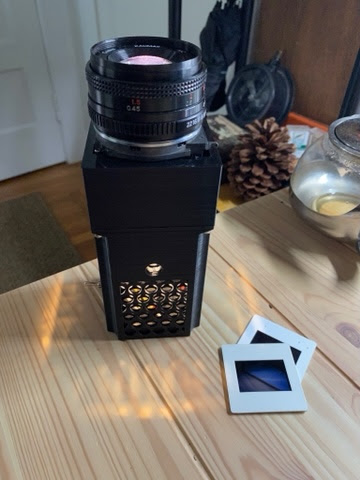
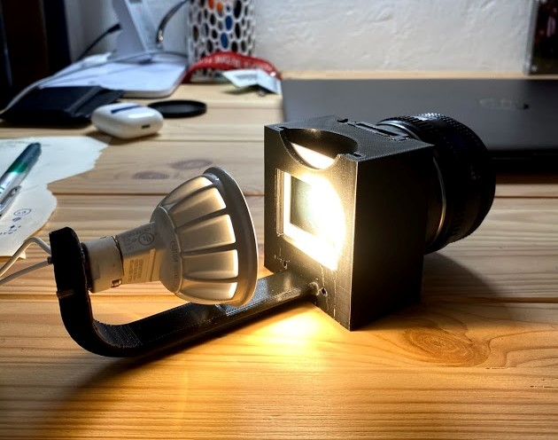
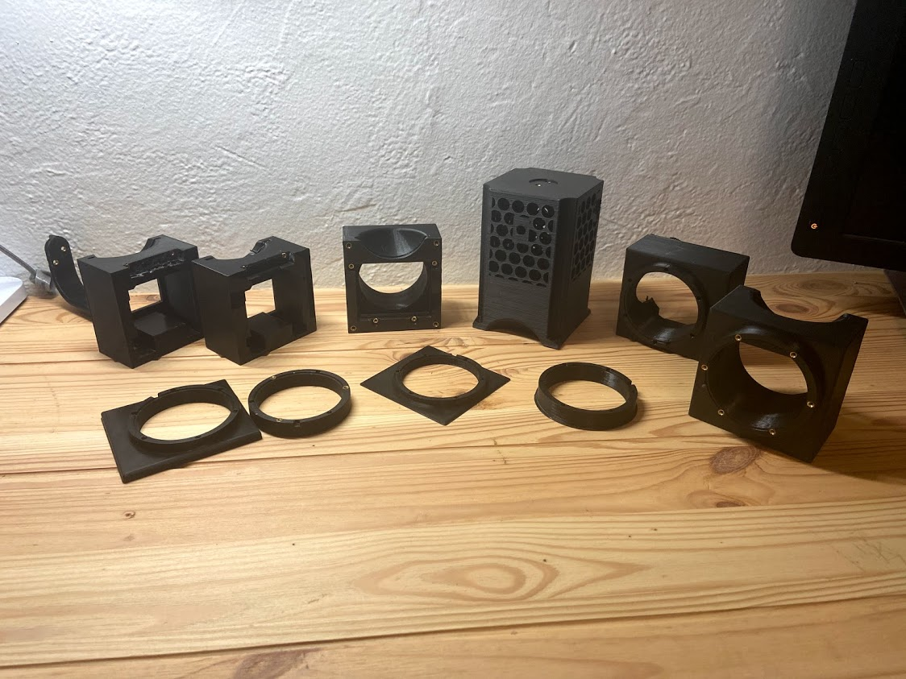
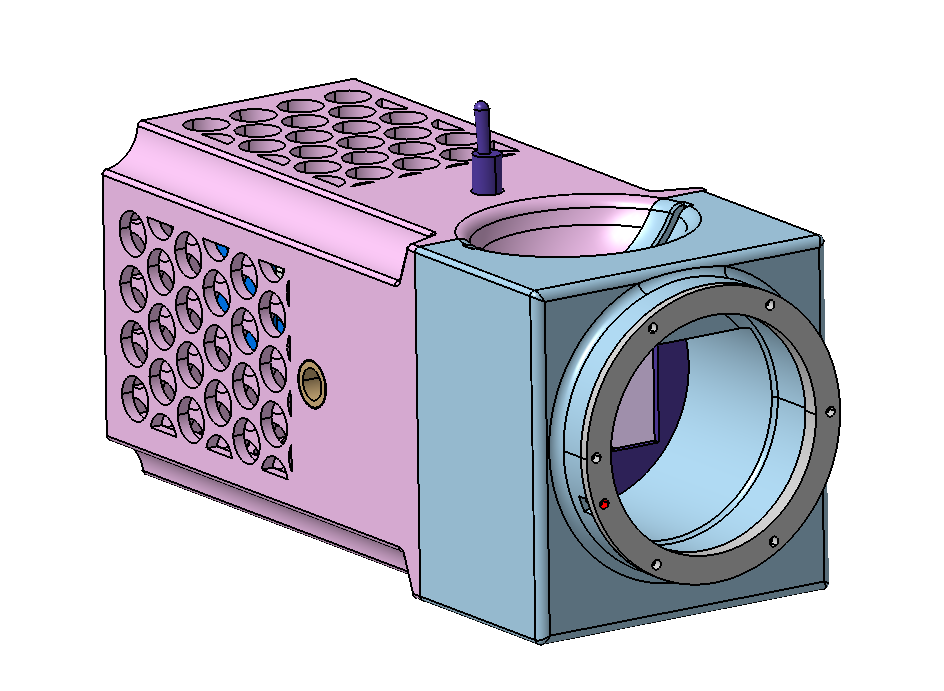
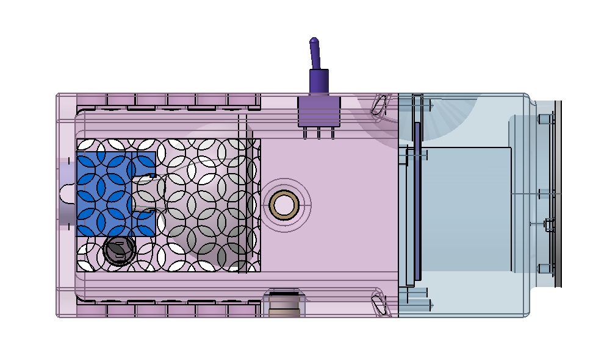
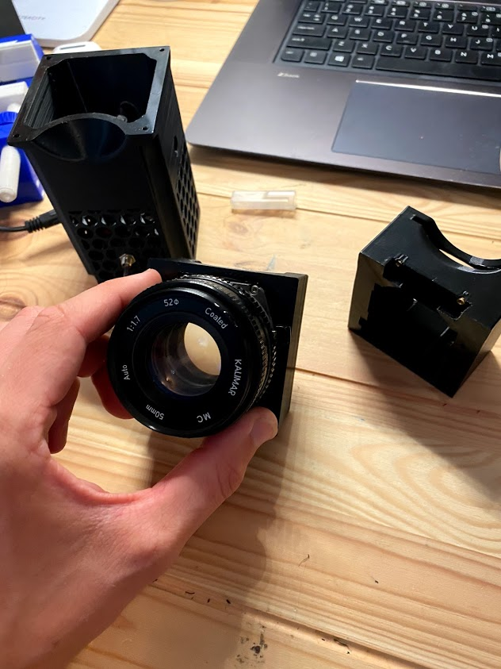
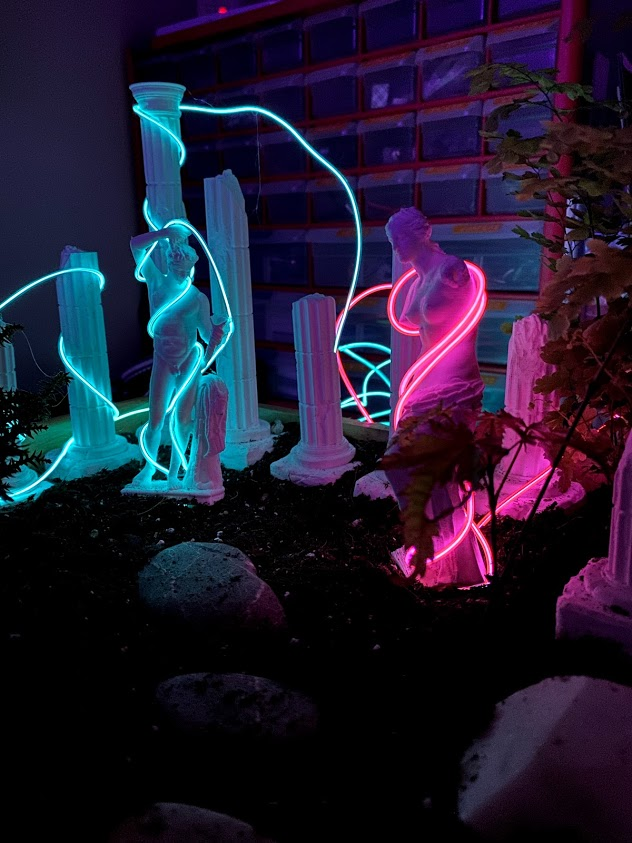
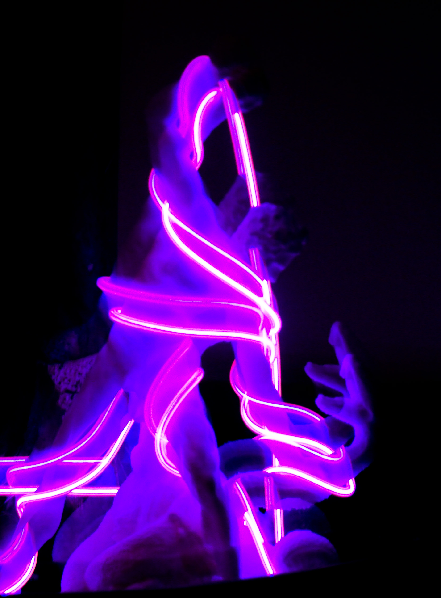
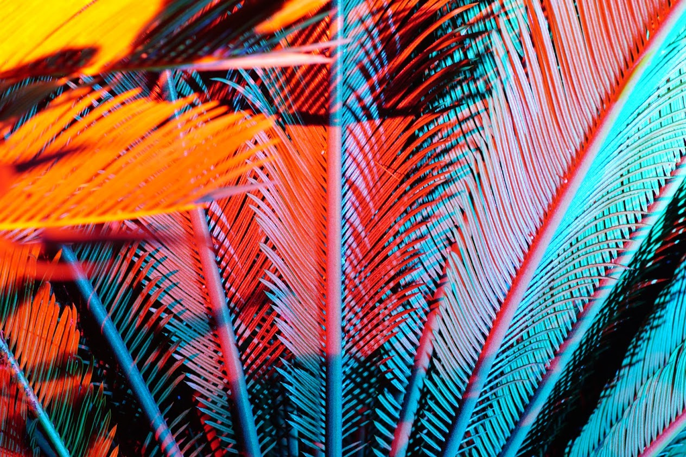
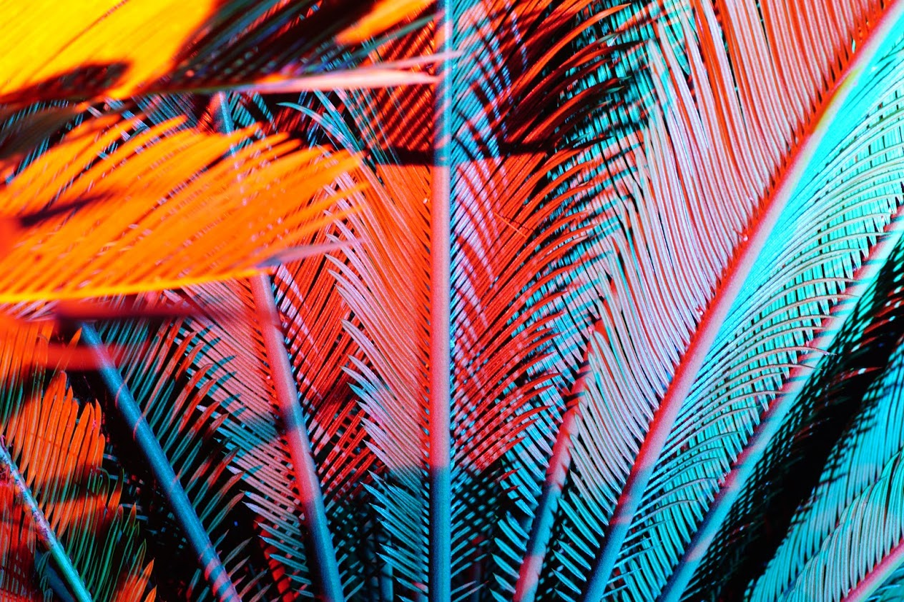

Introduction
I have been working on this slide projector project for a little over a year and it’s finally done! It’s used to project 35 mm slides onto the wall or ceiling. I think of it as a way to hang a photo on the wall without having to get it printed. People often ask where I get the slides. Slide photos are easy to make, you just need to buy color positive film and get it developed. My favorite is Ektachrome.
I have been interested in projects involving light and projections ever since I saw James Turrell’s work at MASS MoCa. I’ve been experimenting with different colored LEDs and theatre gels in my photography and for lighting at home. I also spent a few weeks experimenting with electroluminescent wire. Some pictures of this related work are at the end.
The idea to combine light work with photography started in March of 2019 when my friend Olivia came down to visit and we worked together on her upcoming photography project. Together we made 20 wooden light boxes to backlight her photos for an exhibit. Since then I’ve made several light boxes for my own pictures and I have a parametric model for 3D printing them at any size. This project naturally led to the projector but it took about a year of playing with lenses on and off to get anywhere with it.
Optical Bench
The optical bench was really the V0 version of the projector. I bought some unmounted lenses and then 3D printed holders for the lenses, a simple light source, and a slide. Then I played around with different combinations of slides and lenses until I got some projections. During this whole project I found if very difficult to find good resources on the optics of projection. I did eventually find a book that has some good stuff in it: Optics and Optical Instruments by B. K. Johnson, but most of the optical stuff in this project I just figured out experimentally.
As you can see the optical bench got me started projecting my first few images, but this setup didn’t project large enough for what I wanted, I needed a shorter focal length lens stack.
TV Lens
One lucky day while walking home from the train station after work I saw a huge rear projection TV on the curb. I had a vague idea of how these TVs worked and thought there would probably be some nice projection lenses inside. So right there on the curb I started taking apart the TV to get at the lenses in the back.
These lenses were larger and I spent a lot of time playing with them getting some slightly better projections than the optical bench setup. I even worked on some initial CAD to try to package it with a light source, slide holder, and focusing mechanism into a nice looking product.
The main problem with this lens, though, was chromatic aberration. In a rear projection TV you have three separate color channels projecting onto the screen. This means there’s a red lens, a green lens, and a blue lens, all with a dedicated light source. Because the red lens only has pure red light going through it the lens doesn’t need to be color corrected at all. The result when you try to project full color through an uncorrected lens is a blurry image with glow around the highlights. It actually looks pretty cool, but only on certian images.
Camera Lens
The key breakthrough with the project was one night when I was again playing with different light sources and lens combinations trying to figure out why I couldn’t project a clear image. I had just purchased a manual lens for my digital camera and decided to try projecting through it. Immediately I got the crisp, focused image I had been looking for. This was the moment when I realized that a film camera is optically exactly the same thing as a slide projector.
I had a broken SLR camera lying around that I must have picked up at a flea market. That night I started taking apart the camera to try to remove everything except the lens mount and the film holder.
The following few revisions were focused on packaging a good light source and making it look nice. You can see those revisions below.
The first version incorperating the camera lens and slide holder
Many revisions to get the final integration right
Light Source
I went through the same process with the light source as I did with the lens. Starting with a high design effort lower quality process (unmounted and salvaged lenses) and ending up with repurposing a packaged product (camera lens). I spent a lot of time trying to get unmounted COB LEDs to work. I thought these were cool because they are insanely powerful and cheap. You can get 5W through a tiny little diode, but with great light comes great heat. I could get these running for about 5 seconds before they popped. I tried different heat-sinks and thermally conductive paste. I was running them with a proper current controlled driver, but still never got them to live for more than a minute. Ultimately I went with a packaged LED MR16 floodlight, these are way simpler to use because all of the thermal management is built in. They just take 12 VDC and you’re good to go. The other advantage is that they come with lenses and can be purchased at a much narrower beam angle than the COB lights. A narrower beam angle helps package the slide holder further from the hot light source without losing too much light. After giving up on the COB light I found this excellent guide to getting them to work. If you’re going to try building a light source start here.
Conclusion
After about 7 distinct iterations I finally have a projector that I’m happy with. The first one I build I sent as a gift to Olivia. Then shortly after I bought another SLR for $5 on ebay and built a copy for myself.
The final projector has a little tripod with two mounts for projecting portrait and landscape slides. It’s got my favorite toggle switch on the top and a 12V port on the side. I love projecting a photo on the wall or ceiling of my room all day, and it’s nice to switch the image based on what color light I want in the room.
More Photos
 Some screenshots of the CAD
More projections
The Slide is held behind a pane of glass to protect it from the heat of the light
Disassembled
Lights
Some smaller but related projects involving light.
Sculptures
3D printed sculptures with electroluminescent wire
 Cycas
Cycas Revoluta photographed with theater gels on flashlights
 
